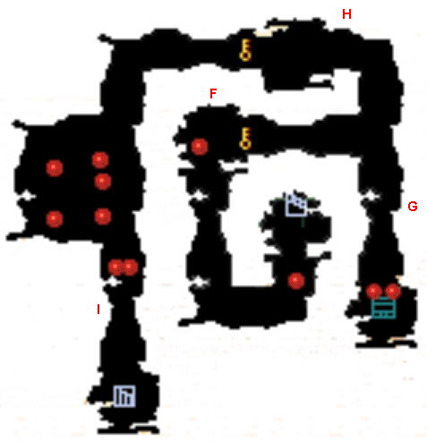

| 概要 | 情報 | アイテム一覧 |
| 敵キャラ一覧 | ステージ一覧 | 夢幻迷宮について |
| 攻略チャート | Zwei!! 攻略へ |
| ステージ選択へ |
クロップ洞窟 Lv.2
| A | A地点にある宝箱を2回開閉すると、敵が現れます。 その敵を全て倒すと先へ進めます。 |
B  |
B地点にはキノコがあります。 そのキノコを、右の画像の苗床まで移動させることで次に進むことができます。 |
| C | C地点の宝箱を開いた瞬間、罠が動き出しますので注しましょう。 |
| D | D地点の扉は、右から左への移動のみ使用可能です。 |
| E |
E地点にある苗床へ移動すると、キノコと敵が降ってきます。 キノコを苗床へ移動すれば、閉じた扉が開きます。 |
|  | |
| F | F地点にいるコボルとを倒すと、罠が作動します。 それと同時に敵が現れ、全て倒すと先に進めます。 |
| G |
画像のツボを破壊すると爆弾が出てきます。 その爆弾で、下にある大砲を破壊しましょう。 |
| H |
H地点のキノコを動かすと敵がたくさん降ってきます。 |
I |
I地点にあるこの骸骨を壊すと、先へ進めます。 罠から少し離れれば、ポックルでも骸骨が破壊できます。 |
| ステージ選択へ |
| 概要 | 情報 | アイテム一覧 |
| 敵キャラ一覧 | ステージ一覧 | 夢幻迷宮について |
| 攻略チャート | Zwei!! 攻略へ |
Zwei!!
| 目次へ戻る | ページの上部へ |